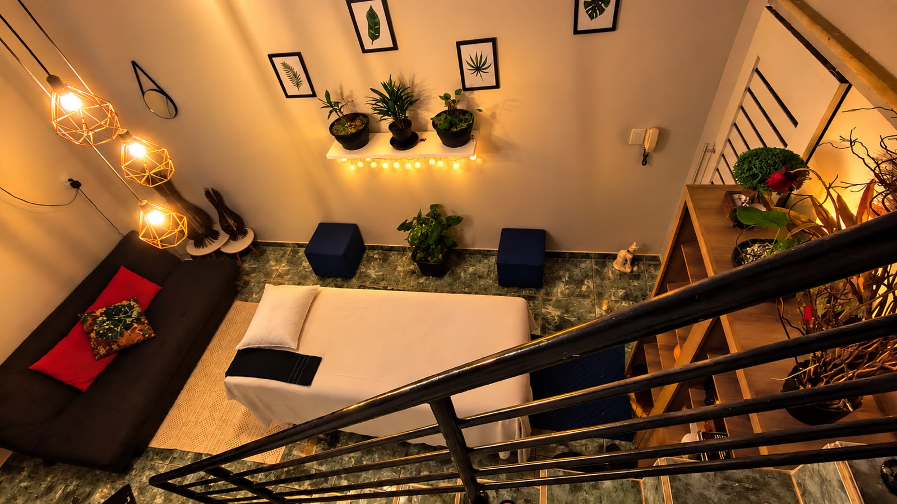
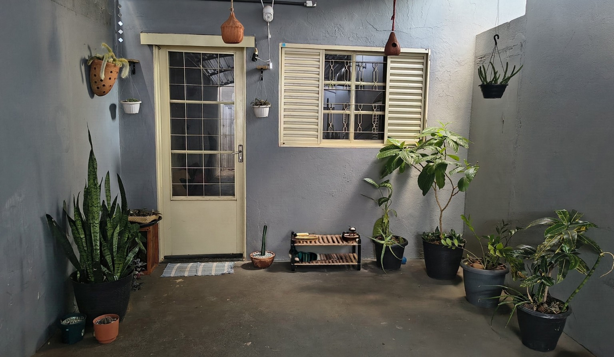

Seu momento de equilíbrio e bem-estar
Uma experiência completa de massagem para aliviar tensões, renovar as energias e cuidar do corpo e da mente.
📅 Agendar minha massagem →A experiência Oxumaré
Uma massagem completa de 1 hora, unindo diferentes técnicas para o seu bem-estar.
Massagem Relaxante
Alivia tensões, reduz o estresse e promove equilíbrio do corpo e da mente.
Liberação Miofascial
Trabalha tensões e rigidez muscular, melhorando a mobilidade e proporcionando alívio profundo.
Ventosaterapia
Utiliza ventosas para estimular a circulação local e promover relaxamento das tensões.
Pedras Quentes
O calor das pedras proporciona relaxamento profundo e alívio das tensões musculares.
Reflexologia Podal
Estimula pontos específicos dos pés, promovendo relaxamento e equilíbrio.
Escalda-pés com sal grosso e ervas
Um complemento especial para aliviar o cansaço e proporcionar bem-estar físico e mental.
de atendimento
Reserva de R$ 50 via Pix. O valor da reserva é obrigatório e não reembolsável.
Escolha o dia e o horário e garanta seu momento de cuidado.
Quero agendar agora →Um espaço preparado para você
Um ambiente tranquilo e acolhedor, pensado para proporcionar conforto, privacidade e bem-estar.


Estamos em Uberlândia
Tibery — Uberlândia/MG
Um espaço reservado e acolhedor para você aproveitar seu momento.
🗺️ Ver no Google Maps